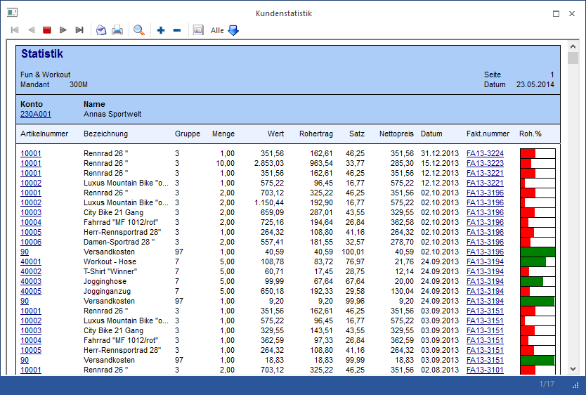
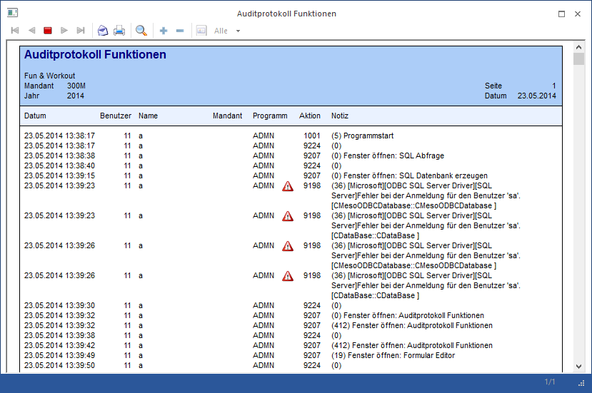
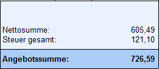
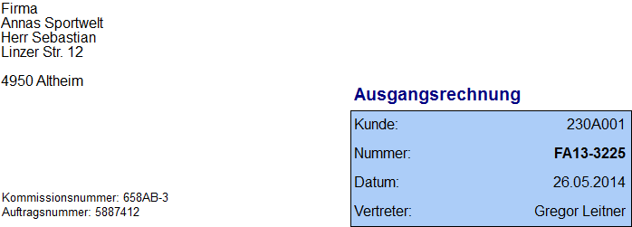
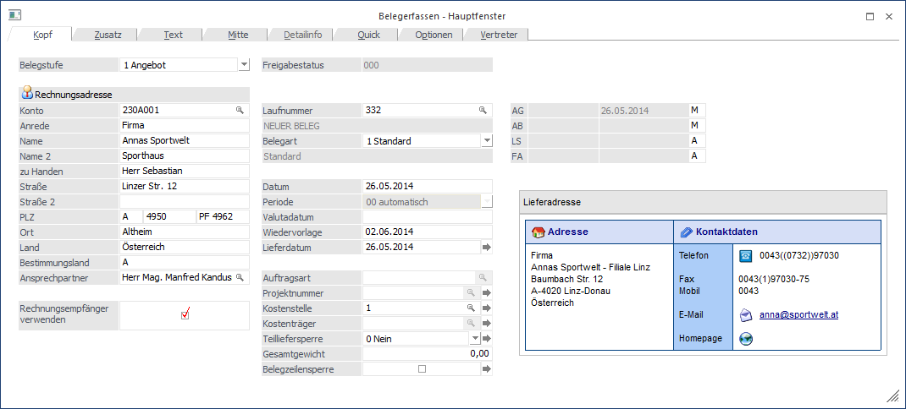
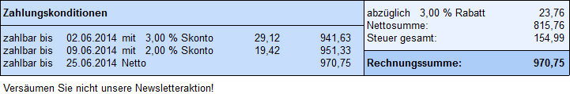
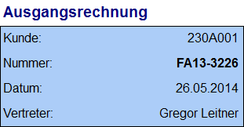
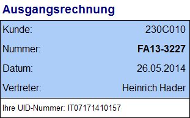
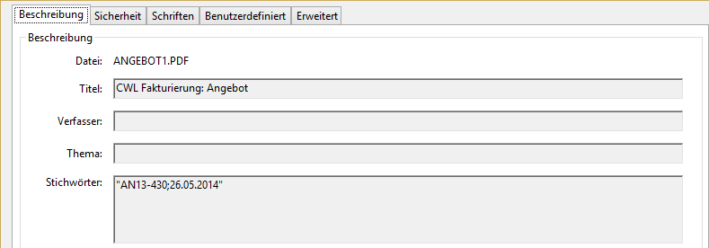

Mit dieser Funktion kann man mit Hilfe einer VB-Script-Formel Elemente verbinden und das Ergebnis in einem beliebigen Format ausgeben. Zum Beispiel können damit XML Elemente als Multiline Elemente dargestellt werden, obwohl es diese Formatierungsmöglichkeit bei XML-Elementen sonst nicht geben würde.
"Simulation" bedeutet in diesem Zusammenhang, dass innerhalb der Formel das gewünschte Element (z.B. eine Lookup-Var wie die Bezeichnung der Steuerzeile) mit einem im Aufruf festgelegten Format für eine im Aufruf angegebene Variable (z.B. der Key der Steuerzeile) ausgewertet wird und das Ergebnis in der Formel weiterverarbeitet werden kann.
Ø Syntax
SimulateItem asc("T"), Y, Z, "Funktion"
Ø T
Dieser Wert gibt an, um welchen Typ von Element es sich handelt. Folgende Typen von Elementen können "simuliert" werden:
ü B - Prozent Balken
ü G - Bild
ü L - Linie
ü M - Multiline-Textausgabe
ü O - Objekte (z.B. Externes Objekt (OIF) und QR Code)
ü P - Eigenschaft
ü R - Rechteck und Fläche
ü S - Steuerelement (z.B. AUX PRINTER, AUX MAIL, AUX SUBPDB oder SQL)
ü U - Lookup Element
ü X - XML Element
Ø Y, Z,
In Abhängigkeit vom Typ des Elements werden diese Werte gefüllt oder verbleiben auf 0.
ü B - Definition der Variable (View = Y, Variable = Z), die Angedruckt werden soll
ü G - Wenn eine Grafik aus einer Variable abgefragt wird, dann wird hier die Variable angegeben
ü L - Der Wert Y gibt die Länge der Linie an, der Wert Z bleibt auf 0
ü M - Definition der Variable (View = Y, Variable = Z), die Angedruckt werden soll
ü O - Definition der Variable (View = Y, Variable = Z), welche für die Simulation des Objekts genutzt werden soll
ü P - Definition der Basisvariable (View = Y, Variable = Z), anhand derer dann die Eigenschaft abgerufen wird
ü R - Der Wert Y gibt die Breite, der Wert Z die Höhe des Rahmens bzw. der Fläche an
ü S - Ist immer 0
ü U - Definition der Variable (View = Y, Variable = Z), welche angedruckt werden soll
ü X - Definition der Variable (View = Y, Variable = Z), wo die XML-Datei angehängt ist
Ø Funktion
In diesem Teil wird die Funktion angegeben, welche "simuliert" werden soll. Normalerweise kann dazu das Feld "Inhalte" im Formulareditor verwendet werden. D.h. im Feld "Inhalte" wird die jeweilige Funktion angezeigt, welche dann für die Funktion in der VB-Formel genutzt werden kann, z.B.:
ü B -
L0.000000H100.000000W10V1
Die Funktion gibt den niedrigsten und den höchsten
Wert an, sowie die Breite und die Höhe der Darstellung.
ü G -
GRAFIK.JPG.FROMDB,6,26{AUTOFIT}
Die Funktion holt die Datei "Grafik.JPG" aus
der Datenbank und druckt sie mit der Option "Proportional anpassen" auf 6 Zeilen
x 26 Spalten an.
ü L - -E 2
Die Funktion druckt
eine horizontale (-), nicht zentrierte Linie (E) in der Stärke 2 (2) an.
ü O -
W:87;H:16;T:4;I:1;S:4;F:2;M:0;TITLE: Kontakt;TEXT:{5 P99WBASECONTACT0};
Diese Funktion gibt ein externes
Objekt mit dem Typ "Objekt" in der Breite 87 und Höhe 16 aus (Überschrift lautet
" Kontakt"). Das Objekt selber ist hierbei auf "Ansprechpartner" gestellt
mit dem Formular "P99WBASECONTACT".
Hinweis
Das Element "FF" (FormFeed) wird je nach Windows-Umgebung unterschiedlich dargestellt. Sollte die Funktion selber geschrieben werden, muss jeweils "chr(12)" anstelle des "FF" platziert werden.
ü M - %s,30
Die Funktion druckt
die angegebene Variable in Multilineformat mit 30 Zeichen pro Zeile an.
ü P -
{OBJ:3}{GROUP:1001}{PROP:1005}{TYPE:7}{NAME:RB}{FORMAT:%s}
Mit Hilfe dieser
Funktion wird die Eigenschaft 1005 mit dem Namen RB aus der Gruppe 1001 mit dem
Typ 7 (fix) für ein Personenkonto abgefragt und als Text (%s) angedruckt.
ü R - FC {GRADIENT=255 255
000,255 000 000,3}
Durch die Funktion wird eine Fläche mit zentrierten Linien
und einem Verlauf von Gelb nach Rot mit 135 Grad angezeigt.
ü S -: AUX
ON;LIEFERUNG<VAR:25/21>.txt{REPLACE}
Durch diese Funktion wird eine
Druckumleitung in die Datei "LIEFERUNG<Kundennummer>.TXT" durchgeführt,
wobei die Datei immer überschrieben wird.
ü U - %s{VIEW10;VAR9}
Mit Hilfe
der Funktion wird als Ergebnis die Variable 9 aus der Tabelle 10 als Text (%s)
angedruckt.
ü X -
{XML:belegkopf/auftraggeber/name}{TEMPLATE:Belegkopf}{TYPE:1}
Die Funktion
druckt das Tag "Belegkopf/Auftraggeber/Name" aus der Vorlage "Belegkopf" an,
wobei es sich um eine Beleg-XML-Erweiterung handelt.
Beispiel 1 - Prozent Balken "B"
Anforderung:
Der Balken für den Rohertragsprozentsatz soll in der Kundenstatistik abhängig vom Rohertrag angezeigt werden - liegt der Rohertragsprozent unter 50 %, soll der Balken rot, bei über 50 % soll der Balken grün dargestellt werden.
Lösung:
Es werden in das Formular "P02W61A1" (Flag "1") 2 Formeln eingebaut, die folgenden Inhalt haben und die übereinander positioniert werden:
ü Formel 1 (das Element wird in grüner Schrift dargestellt)
If Value (0,132) >= 50 Then 'Wenn Rohertragsprozentsatz größer 50
SimulateItem asc("B"), 0,132, "L0.000000H100.000000W10V1" 'dann wird der Balken angedruckt
End If
ResultValue = "" 'ResultValue wird auf "Leer" gestellt, damit nichts gedruckt wird (wenn das SimulateItem keinen Wert zurückbringt)
ü Formel 2 (das Element wird in roter Schrift dargestellt)
If Value (0,132) < 50 Then 'Wenn der Rohertragsprozentsatz kleiner 50
SimulateItem asc("B"), 0,132, "L0.000000H100.000000W10V1" 'dann rd der Balken angedruckt
End If
ResultValue = "" 'ResultValue wird auf "Leer" gestellt, damit nichts gedruckt wird (wenn das SimulateItem keinen Wert zurückbringt)
Ergebnis in der Statistikauswertung

Beispiel 2 - Bild "G"
Anforderung:
Im Auditprotokoll Funktionen sollen bestimmte Fehlermeldungen mit einem Warnsymbol versehen werden.
Lösung:
Im Formular "P00W37" wird folgende Formel eingebaut:
ü Formel
If Value(0,38) = 9198 Then 'Wenn die Aktion 9198 lautet
SimulateItem asc("G"), 0, 0, "LIST:5,124" 'dann wird die Grafik 124 aus der Grafikleiste 5 gedruckt
End If
ResultValue = "" 'ResultValue wird auf "Leer" gestellt, damit nichts gedruckt wird (wenn das SimulateItem keinen Wert zurückbringt)
Ergebnis im Auditprotokoll Funktionen

Beispiel 3 - Linie "L"
Anforderung:
Wenn ein Summenrabatt im Angebot gewährt wird, dann soll unter dem ausgewiesenen Summenrabatt eine Linie zur Nettosumme angedruckt werden. Wenn der Summenrabatt 0 ist, soll auch keine Linie erscheinen.
Lösung:
Im Formular "P02W41" (Flag "C") wird folgende Formel eingebaut:
ü Formel
If Value(0,272) <> 0 Then 'Wenn der Summenrabatt ungleich 0 ist
SimulateItem asc("L"), 27, 0, "-C 1" 'dann wird eine zentrierte Linie mit Breite 27 und Höhe 1 angedruckt
End If
ResultValue = "" 'ResultValue wird auf "Leer" gestellt, damit nichts gedruckt wird (wenn das SimulateItem keinen Wert zurückbringt)
Ergebnis im Angebot ohne Summenrabatt

Ergebnis im Angebot mit Summenrabatt
Beispiel 4 - Multiline Textausgabe "M"
Anforderung:
Auf der Rechnung soll die interne Belegmemo im Multilineformat (mit 25 Zeichen pro Zeile) gedruckt werden, wenn die Belegart "1" verwendet wird.
Lösung:
Hierzu muss im Formular "P02W44" (Flag "A") folgende Formel hinterlegt werden:
ü Formel
If Value (0,113) = "1" Then 'Wenn die Belegart "1" verwendet wird
ResultValue = SimulateItem (asc("M"), 0 , 130, "%, 25") 'dann soll die interne Belegmemo im Multilineformat mit 25 Zeichen pro Zeile gedruckt werden
End If
Ergebnis in der Faktura bei Verwendung der Belegart 1

Beispiel 5.1 - Objekt "O" (Externes Objekt)
Anforderung:
Wenn lt. Standardeinstellungen die Rechnungs- und Lieferadresse voneinander abweichend ist (Hauptkonto für den Beleg ist der Rechnungsempfänger), dann soll in der Beleginfo die Anschrift der Lieferadresse in Form eines OIF-Elements dargestellt werden.
Lösung 1:
Es wird das OIF-Element in das Formular "P02W249" eingebaut, der Inhalt (die Funktion) in eine Formel kopiert und dann mit einer If / Then-Anweisung versehen:
ü Formel (Funktion kopiert)
If Value (0,348) <> Value (0,32) Then 'Wenn Rechnungs- und Lieferadresse abweichend voneinander sind
ResultValue = SimulateItem (asc("O"), 0, 32, "W:87;H:14;T:4;I:1;S:4;F:0;M:0;TITLE: Lieferadresse;TEXT:{0 P99WBASEACCOUNT 0};") 'dann wird ein OIF-Element mit den Daten der Lieferadresse ausgegeben
End If
ResultValue = "" 'ResultValue wird auf "Leer" gestellt, damit nichts gedruckt wird (wenn das SimulateItem keinen Wert zurückbringt)
Lösung 2:
Die Funktion für das SimulateItem wird selber geschrieben. Hierbei ist darauf zu achten, dass die "FF" (FormFeed)-Elemente jeweils durch "chr(12)" ersetzt werden.
ü Formel (Funktion selber geschrieben)
befehl = "W:87;H:14;T:4;I:1;S:4;F:0;M:0;"
befehl = befehl & "TITLE: Lieferadresse;TEXT:"
befehl = befehl & "{0" & chr(12) & "P99WBASEACCOUNT" & chr(12) & chr(12) & chr(12) & "0};" 'Die Funktion für das SimulateItem wird über die Variable "befehl" gebildet
If Value (0,348) <> Value (0,32) Then 'Wenn Rechnungs- und Lieferadresse abweichend voneinander sind
ResultValue = SimulateItem (asc ("O"), 0, 32, befehl) 'dann wird ein OIF-Element mit den Daten der Lieferadresse ausgegeben
End If
ResultValue = "" 'ResultValue wird auf "Leer" gestellt, damit nichts gedruckt wird (wenn das SimulateItem keinen Wert zurückbringt)
Ergebnis bei abweichender Lieferadresse

Beispiel 5.2 - Objekt "O" (QR Code)
Anforderung:
Wenn die Artikelgruppe des Artikels "6" lautet, dann soll auf dem Beleg ein QR-Code ausgegeben werden. Im QR Code selber wird die Artikelnummer abgestellt.
Lösung:
Es wird der QR Code in das Rechnungsformular eingebaut, der Inhalt (die Funktion) in eine Formel kopiert und dann mit einer If / Then-Anweisung versehen:
ü Formel
If Value (21,5) = 6 Then 'Wenn die Artikelgruppe des Artikels "6" lautet
QR = "W:17;H:8;T:6;I:0;F:0;" 'dann wird die Funktion des QR Code erzeugt (Breite 17, Höhe 8)
ResultValue = SimulateItem (asc ("O"), 21, 2, QR) 'und der QR Code ausgegeben mit dem Inhalt der Artikelnummer
End If
ResultValue = "" 'ResultValue wird auf "Leer" gestellt, damit nichts gedruckt wird (wenn das SimulateItem keinen Wert zurückbringt)
Beispiel 6 - Eigenschaft "P"
Anforderung:
Im Personenkontenstamm gibt es eine Eigenschaft "Newsletter". Wenn diese Eigenschaft gesetzt ist, dann soll auf der Rechnung der Text "Versäumen Sie nicht unsere Newsletteraktion!" angedruckt werden.
Lösung:
Dazu muss im Formular "P02W44" (Flag "C") eine Formel hinterlegt werden:
ü Formel
EigAbfrage = SimulateItem (asc("P"), 25, 21, "{OBJ:3}{GROUP:1002}{PROP:1008}{TYPE:9}{NAME:Newsletter}") 'In die Variable "EigAbfrage" wird die Eigenschaft "Newsletter" des ausgewählten Kontos gestellt
If EigAbfrage = "Ja" Then 'Wenn die Eigenschaft gesetzt ist (aktiv => Ja)
ResultValue = "Versäumen Sie nicht unsere Newsletteraktion!" 'dann wird der Text angedruckt
Else
ResultValue = "" 'sonst bleibt der Text leer
End If
Ergebnis in der Faktura, wenn die Eigenschaft aktiviert wurde

Beispiel 7 - Rahmen "R"
Anforderung:
Wenn die UID-Nummer des Kunden vorhanden ist, dann soll diese in einem eigenen Rahmen unter dem Bereich der Rechnungsnummer angedruckt werden. Wenn keine UID-Nummer eingetragen ist, soll weder der Rahmen, noch die UID-Nummer angezeigt werden.
Lösung:
Dazu müssen im Formular "P02W44" (Flag "A") 2 Formeln eingebaut werden:
ü Formel 1 (für den Rahmen)
If Value(50,22) <> "" Then 'Wenn die UID-Nummer gefüllt ist
imulateItem asc("R"), 32, 3, "RC 1" 'dann wird eine Fläche mit Breite 32 und Höhe 3 und zentrierter Linie in der Stärke 1 angedruckt
End If
ResultValue = "" 'ResultValue wird auf "Leer" gestellt, damit nichts gedruckt wird (wenn das SimulateItem keinen Wert zurückbringt)
ü Formel 2 (für die UID-Nummer)
If Value(50,22) <> "" Then 'Wenn die UID-Nummer gefüllt ist
ResultValue = "Ihre UID-Nummer: " & Value(50,22) 'wird der Text "Ihre UID-Nummer" und die UID-Nummer selbst angedruckt
Else
ResultValue = "" 'sonst bleibt der Andruck leer
End If
Ergebnis in der Faktura, wenn keine UID-Nummer vorhanden ist

Ergebnis in der Faktura, wenn eine UID-Nummer vorhanden ist

Beispiel 8.1 - Steuerelement "S" (AUX ON)
Anforderung:
Wenn im Zusatzfeld 22 eines Personenkontos der Wert "Datei" enthalten ist, dann sollen bestimmte Werte in die Datei "LieferungKundennummerLieferscheinnummer.TXT" geschrieben werden.
Lösung:
Es werden 2 Formeln in das Formular eingebaut. Durch die erste Formel wird das "AUX ON" gestartet und durch die zweite Formel die Ausgabe beendet. Zwischen den beiden Formeln werden dann die auszugebenden Variablen platziert (ggfs. auch per SimulateItem).
Hinweis
Bei der Platzierung der Formeln muss auf die Reihenfolge geachtet werden (AUX ON - Variablen - AUF OFF).
ü Formel (AUX ON)
If Value (50,222) = "Datei" Then 'Wenn im Zusatzfeld 22 des Personenkontos der Wert "Datei" enthalten ist
SimulateItem asc("S"), 0, 0, "AUX ON;Lieferung<VAR:25/21><VAR:25/45>.TXT" 'dann wird eine Druckumleitung auf die Datei LieferungKundennummerLieferscheinnummer.TXT durchgeführt
End If
ResultValue = "" 'ResultValue wird auf "Leer" gestellt, damit nichts gedruckt wird (wenn das SimulateItem keinen Wert zurückbringt)
ü Formel (AUX OFF)
If Value (50,222) = "Datei" Then 'Wenn im Zusatzfeld 22 des Personenkontos der Wert "Datei" enthalten ist
SimulateItem asc("S"), 0, 0, "AUX OFF;" 'dann wird die gestartete Druckumleitung beendet
End If
ResultValue = "" 'ResultValue wird auf "Leer" gestellt, damit nichts gedruckt wird (wenn das SimulateItem keinen Wert zurückbringt)
Beispiel 8.2 - Steuerelement "S" (AUX PRINTER)
Anforderung:
Abhängig von der Kundengruppe (1 oder 3) sollen beim Belegdruck unterschiedliche Drucker verwendet werden. Des Weiteren sollen nur die Belege der Kundengruppe "1" ins Archiv abgelegt werden.
Lösung:
In den Belegformularen (z.B. "P02W44") wird im Kopfbereich folgende Formel implementiert:
ü Formel
If Value(50,72) = "1" Then 'Wenn die Kundengruppe des Kontos "1" lautet
ResultValue = SimulateItem asc("S"), 0, 0, " AUX PRINTER1;ARCHIVE" 'dann wird der Beleg auf den Drucker 1 ausgegeben und der Beleg ins Archiv abgestellt
End If
If Value(50,72) = "3" Then 'Wenn die Kundengruppe des Kontos "3" lautet
ResultValue = SimulateItem asc("S"), 0, 0, " AUX PRINTER2" 'dann wird der Beleg auf den Drucker 2 ausgegeben
End If
Achtung
Das Ergebnis der Formel muss in eine SQL-Variable übergeben werden, da die Anweisung vom Formular ansonsten nicht ausgeführt werden kann. Die SQL-Variable selber muss aber nicht in das Formular eingebaut werden.
Beispiel 8.3 - Steuerelement "S" (AUX SQL)
Anforderung:
In der Produktionsinformations-Liste soll der Name des jeweiligen Personenkontos angezeigt werden (auftragsbezogene Produktion). Da der Name nicht über die bereitgestellten Variablen zur Verfügung steht, muss dieser per SQL-Statement herangezogen werden.
Aus Gründen der Performance soll diese SQL-Abfrage nur ausgeführt werden, wenn die Produktionsebene 0 ausgegeben wird.
Lösung:
Es werden 2 Formeln in das Formular "P20W72" eingebaut. Durch die erste Formel wird das "AUX SQL" gestartet und durch die zweite Formel der erste Datensatz ausgelesen. Im Anschluss daran kann das Ergebnis über die Variable 500/100 angedruckt werden.
Hinweis
Bei der Platzierung der Formeln muss auf die Reihenfolge geachtet werden (AUX SQL - AUX SQLNEXT - Variable 500/100).
ü Formel (AUX SQL)
If Value (324,3) = 0 Then 'Wenn die Produktionsebene "0" ist
SimulateItem asc("S"), 0, 0, "AUX SQL;select C003 from T055 where C002 = '<VAR:324/23>' and mesocomp ='~~~~' and mesoyear = yyyy" 'dann wird per SQL-Statement der Name des Personenkontos aus der Tabelle 55 geholt
End If
ResultValue = "" 'ResultValue wird auf "Leer" gestellt, damit nichts gedruckt wird (wenn das SimulateItem keinen Wert zurückbringt)
ü Formel (AUX SQLNEXT)
If Value (324,3) = 0 Then 'Wenn die Produktionsebene "0" ist
SimulateItem asc("S"), 0, 0, "AUX SQLNEXT;" 'dann wird der erste Datensatz aus dem SQL-Statement herangezogen
End If
ResultValue = "" 'ResultValue wird auf "Leer" gestellt, damit nichts gedruckt wird (wenn das SimulateItem keinen Wert zurückbringt)
Beispiel 8.4 - Steuerelement "S" (AUX MAIL)
Anforderung:
Wenn der Rechnungsempfänger dem Konto "230A001" entspricht, dann sollte die Rechnung per Mail als PDF-Datei an die Mailadresse "anna@sportwelt.at" gesandt werden. Als Betreffzeile im Mail sollte der Eintrag "Rechnung Rechnungsnummer" verwendet werden und als Mailtext "Anbei die Rechnung lt. Lieferscheinen".
Lösung:
Im Rechnungsformular "P02W44" wird im Kopfbereich folgende Formel implementiert:
ü Formel
If Value(0,30) = "230A001" Then 'Wenn die Kontonummer des Rechnungsempfängers "230A001" lautet
FormTitle = "Rechnung " & Value(0,37) 'dann lautet der Formularname "Rechnung Rechnungsnummer"
SimulateItem asc("S"), 0, 0, "AUX MAIL;{FORMAT=PDF}anna" & chr(64) & "sportwelt.at{Rechnung <VAR:0/37>"& chr(13) & chr(10) & "Anbei die Rechnung lt. Lieferscheinen}" 'und es wird die Rechnung als PDF-Datei mit den vorgegebenen Texten an die feste Mailadresse "anna@sportwelt.at" gesendet
End If
ResultValue = "" 'ResultValue wird auf "Leer" gestellt, damit nichts gedruckt wird (wenn das SimulateItem keinen Wert zurückbringt)
Beispiel 8.5 - Steuerelement "S" (AUX KEYWORDS)
Anforderung:
Es soll zu einer PDF-Datei Schlüsselwörter mitgegeben werden. Diese Schlüsselwörter werden in der PDF-Datei als "Stichwörter" angezeigt.
Lösung:
Da Schlüsselworte noch nicht per Mesonic Formular Editor zugewiesen werden können, wird dieses per SimulateItem-VB-Formel durchgeführt. Hier wird das Schlüsselwort1 und 2 dem Pdf mitgegeben:
ü Formel (feste Stichwörter)
ResultValue = SimulateItem (asc("S"), 0, 0, "AUX KEYWORDS;Schlüsselwort1;Schlüsselwort2") 'Es werden in die PDF-Datei 2 Stichwörter mit der Bezeichnung "Schlüsselwort1" und "Schlüsselwort2" hinterlegt
ü Formel (variable Stichwörter)
Stichwort = "AUX KEYWORDS;" & Value (0,39) & ";"
Stichwort = Stichwort & Value (0,50) 'Es wird zunächst über die Variable "Stichwort" die Funktion mit Variablen Schlüsselwörtern zusammengesetzt
ResultValue = SimulateItem (asc("S"), 0, 0, Stichwort) 'und dieses dann für die PDF-Datei bereitgestellt
Ergebnis im Acrobat Reader (variable Stichwörter)

Beispiel 8.6 - Steuerelement "S" (AUX SUBPDB)
Anforderung: Es sollen lediglich Artikeletiketten mit einer Artikelnummer größer 10002 gedruckt warden.
Lösung:
Das SUBPDB der Artikeletiketten "P02WAE" wird nur aufgerufen, wenn die Artikelnummer größer 10002 ist.
ü Formel
If Value (26,3) > 10002 Then 'Prüfung Artikelnummer größer 10002
SimulateItem asc("S"), 0, 0, "AUX SUBPDB;P02WAE" 'Aufruf SUBPDB
End If
ResultValue = "" 'ResultValue wird auf "Leer" gestellt, damit nichts gedruckt wird (wenn das SimulateItem keinen Wert zurückbringt)
Beispiel 9 - LookUp Element "U"
Anforderung:
Im Buchungsjournal soll die Bezeichnung der jeweils verwendeten Steuerzeile zur Verfügung gestellt werden. Anschließend soll mit dieser Bezeichnung weiter gearbeitet werden.
Lösung:
Es wird in das Formular "P01W52" eine VB-Formel implementiert, welche als Ergebnis (ResultValue) die Kurzbezeichnung der Steuerzeile zur Verfügung stellt. Anstatt das Ergebnis zu drucken, wird es über die Formel an eine "SQL Var." (mit welcher weitergearbeitet wird) weitergereicht.
ü Formel
ResultValue = SimulateItem (asc("U"), 28, 7, "%s{VIEW10;VAR9}") 'Es wird ein Lookup für die Variable 28/7 durchgeführt und in der Tabelle 10 nach der passenden Bezeichnung (Spalte 9) gesucht
Beispiel 10 - XML-Element "X"
Anforderung:
Für eine detaillierte Formatierung soll das Bearbeitungsdatum aus einem Belegzeilen-XML-Element ausgegeben werden.
Lösung:
Es wird in das entsprechende Belegformular (Flag "N") eine VB-Formel implementiert, welche als Ergebnis (ResultValue) den Inhalt des XML-Datums ausgibt. Anstatt das Ergebnis zu drucken, wird es über die Formel an eine "SQL Var." weitergereicht. Diese kann dann entsprechend den Anforderungen gedruckt werden.
ü Formel
ResultValue = SimulateItem (asc ("X"), 26, 0, "{XML:schema/berarbeitung}{TEMPLATE:Artikeldaten im Beleg}{TYPE:2}") 'Der Inhalt des Tags "schema/bearbeitung" aus der Vorlage "Artikelsdaten im Beleg" wird bereitgestellt, wobei als Key die Value(26,0) dient